Typical bus speed at the 6 pm peak, about the pace of a brisk cyclist.
Share of bus roads slower than 15 km/h at the evening peak, falling by late night.
The slowest stretch: ISBT Anand Vihar to Maharaj Pur Check Post, on the Uttar Pradesh border.
Gaps where a bus reached a stop within 2 minutes of the previous bus on the same route.
Arrival-time error cut by a LightGBM model against history, on familiar and unseen routes.
More evening trips on matched routes than the 2023 timetable planned.
01The data
Delhi publishes a live feed of every city bus's position. It was polled every 10 seconds for six hours. Each response lists every bus with its position, route and trip.
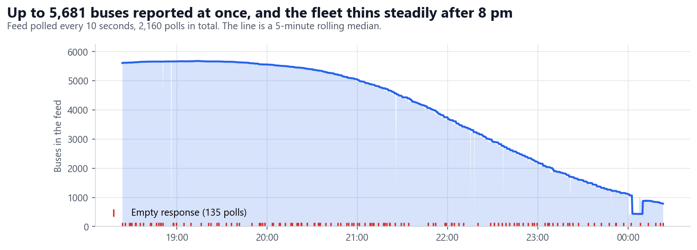
- Up to 5,681 buses were on the road at once, around 7 pm.
- The fleet thins steadily after 8 pm. By midnight, only about 1,000 buses were still running.
- About 6% of polls came back empty. The longest run of empty responses was 30 seconds, so the gaps are short.
Where the buses went
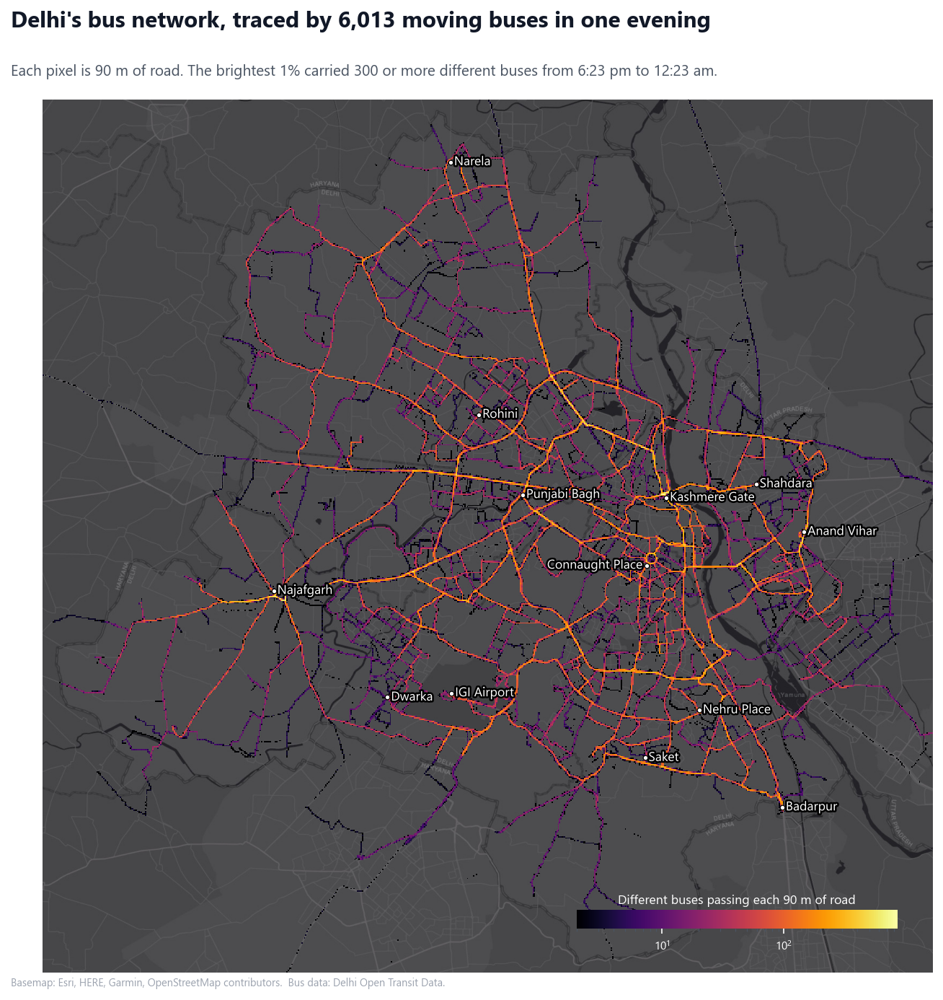
- The busiest corridors are the Ring Road, the Outer Ring Road and the radial roads out to Najafgarh, Narela and Badarpur.
- The network is dense in the centre and thin at the edges. Each outer area hangs off a few main roads.
Why the published timetable cannot answer these questions
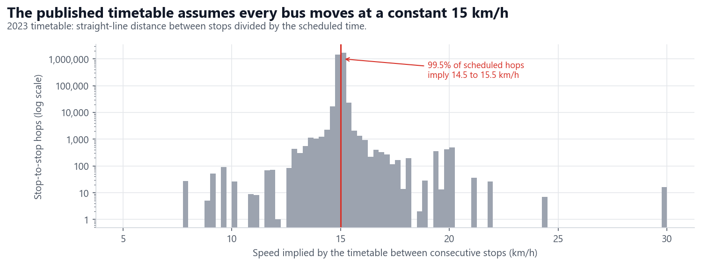
- 99.5% of scheduled stop-to-stop hops assume 14.5 to 15.5 km/h. The portal confirms that timetable times are estimates based on a constant speed.
- Only the live feed shows how fast buses really move. The rest of this report uses it.
02Busy roads and free roads
Speed is measured from consecutive GPS positions of moving buses. Buses parked at depots and terminals are excluded.
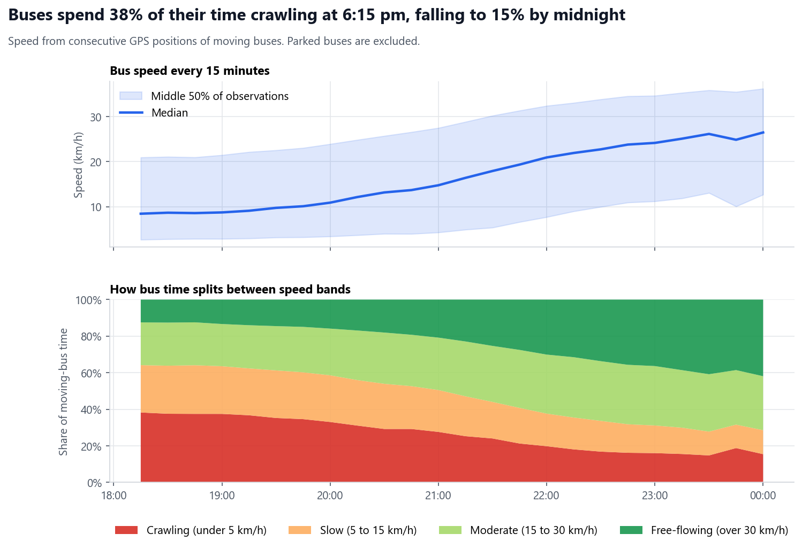
- From 6:15 to 7:30 pm, the typical bus moves at under 10 km/h.
- Speed rises steadily after 8 pm and passes 20 km/h by 10 pm.
- Crawling time more than halves, from 38% of moving time at 6:15 pm to 15% by midnight.
The same roads at the peak and late at night
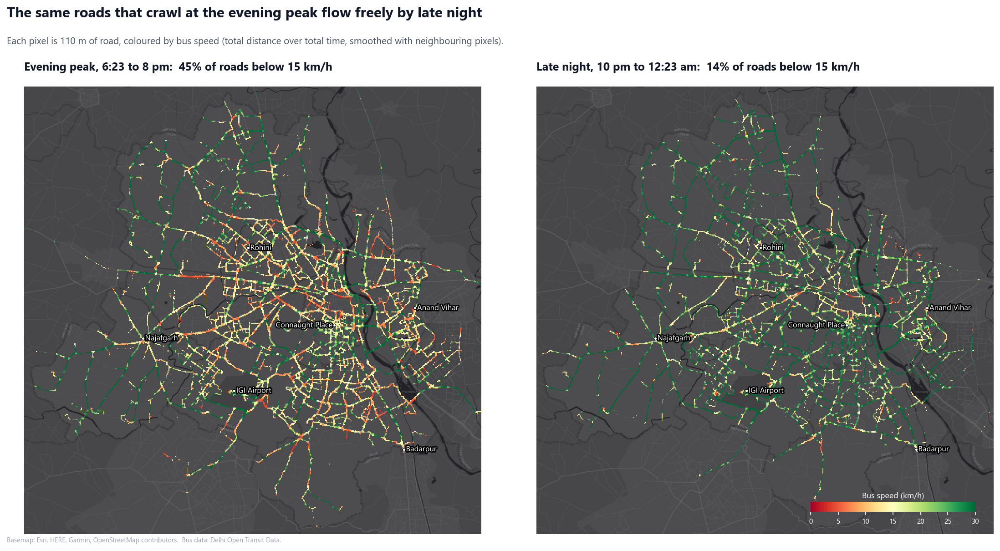
- At the evening peak, 45% of bus roads run below 15 km/h. Red and orange cover most of the city inside the Outer Ring Road.
- By late night, that falls to 14%, and the same roads turn green.
- The outer radial roads stay green in both periods, so congestion is concentrated in the built-up core.
Central Delhi up close
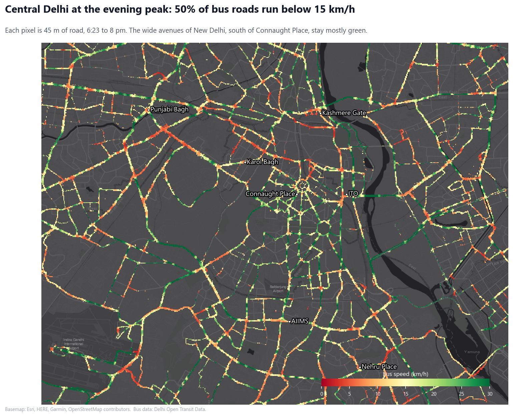
- Half of central bus roads run below 15 km/h at the peak.
- Roads around Karol Bagh, Punjabi Bagh and Kashmere Gate are mostly red. The wide avenues of New Delhi, between Connaught Place and AIIMS, stay mostly green.
What the peak costs

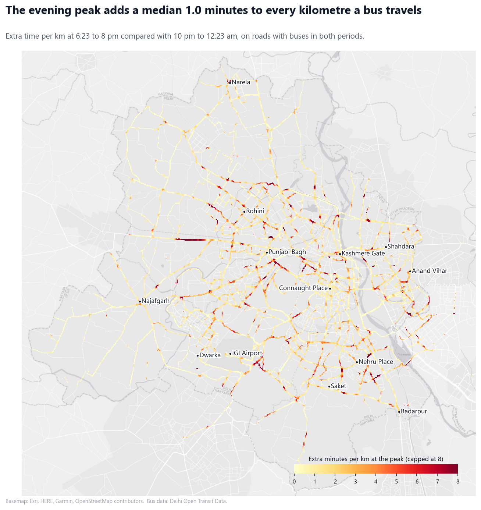
- The peak adds about 1 minute to every kilometre on the median road.
- 6% of roads lose 5 minutes or more per kilometre, mainly around Rohini and Punjabi Bagh, on the airport road and near Nehru Place.
Distance from the centre

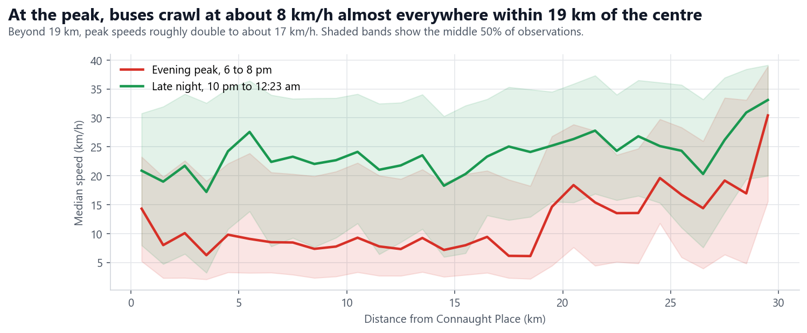
- At the peak, buses crawl at about 8 km/h almost everywhere within 19 km of Connaught Place. Congestion is not just a city-centre problem.
- Beyond about 19 km, peak speeds roughly double.
- Late at night, speeds are 20 to 28 km/h almost everywhere.
03The slowest stretches
Buses were matched to the stops they passed, and the time between consecutive stops was measured. Each stretch below is at least 250 m long and was travelled by at least 10 buses.
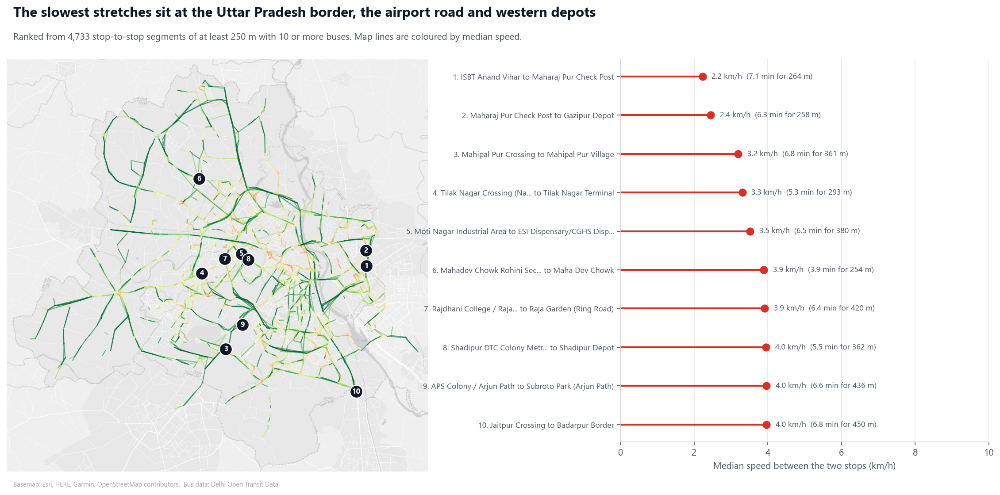
| Stretch | Length | Median time | Median speed |
|---|---|---|---|
| ISBT Anand Vihar to Maharaj Pur Check Post | 264 m | 7.1 min | 2.2 km/h |
| Maharaj Pur Check Post to Gazipur Depot | 258 m | 6.3 min | 2.4 km/h |
| Mahipal Pur Crossing to Mahipal Pur Village (NH-48) | 361 m | 6.8 min | 3.2 km/h |
| Tilak Nagar Crossing to Tilak Nagar Terminal | 293 m | 5.3 min | 3.3 km/h |
| Moti Nagar Industrial Area to ESI Dispensary | 380 m | 6.5 min | 3.5 km/h |
- The two slowest stretches are on the Uttar Pradesh border at Anand Vihar and Gazipur.
- Mahipalpur on the airport road is third.
- Several slow stretches end at a depot or terminal, so part of their time is queuing to enter.
04Bunching
A bus is bunched when it reaches a stop within 2 minutes of the previous bus on the same route. Passengers then wait longer for the bus after that.
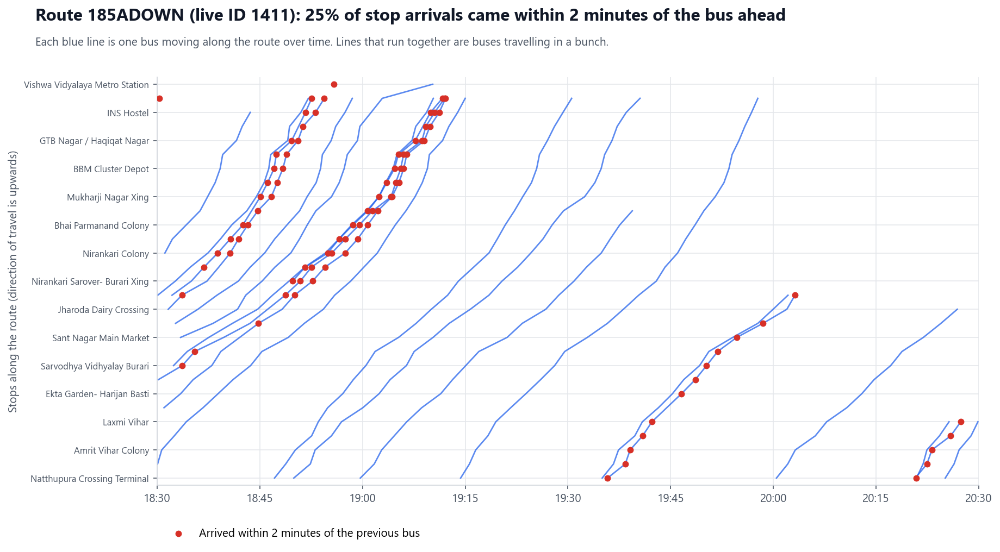
- Around 7 pm, buses on route 185A arrive in clusters. At CV Raman ITI, four buses came within 3 minutes. The next bus took 6 minutes, and the one after that 16 minutes.
Across the whole city
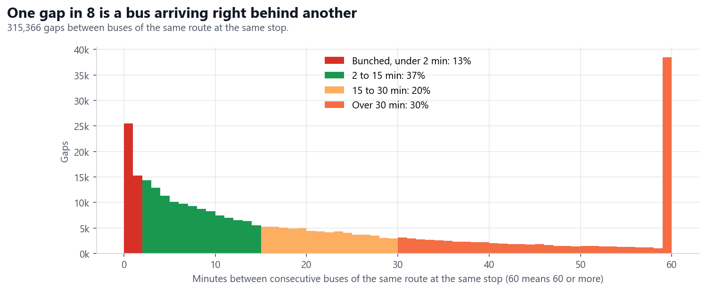
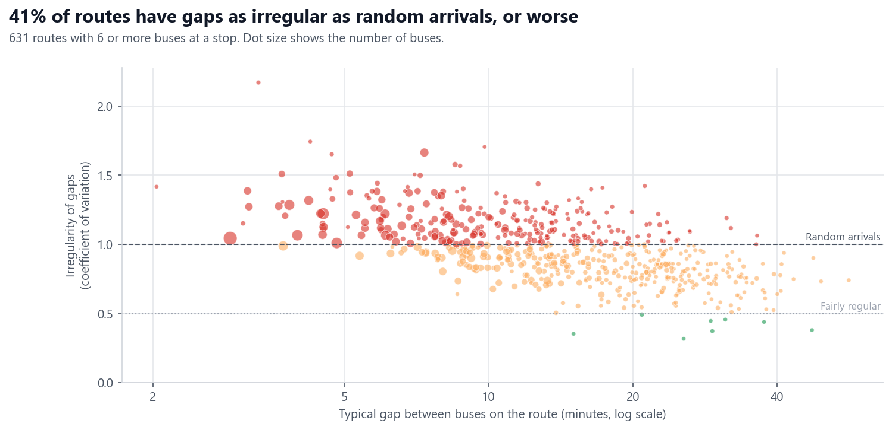
- One gap in eight is under 2 minutes, across 315,366 gaps at stops.
- 41% of routes are as irregular as random arrivals, or worse.
- Frequent routes are the most irregular, because buses close together catch up with each other most easily.
05Predicting arrival times
When a bus reaches a stop, how long until it reaches each of its next 1 to 10 stops? With one evening of data, three methods were compared in three different tests.
| Test | How it splits the data | Historical median | Own recent speed | LightGBM | Gain |
|---|---|---|---|---|---|
| Same hours | Alternate 30-minute blocks | 99 s | 238 s | 85 s | 14% |
| Unseen routes | A quarter of routes held out | 152 s | 303 s | 115 s | 24% |
| Later evening | Train early, test late | 156 s | 189 s | 90 s | 42% |
Mean absolute error in seconds. Gain is LightGBM's improvement on the best other method.
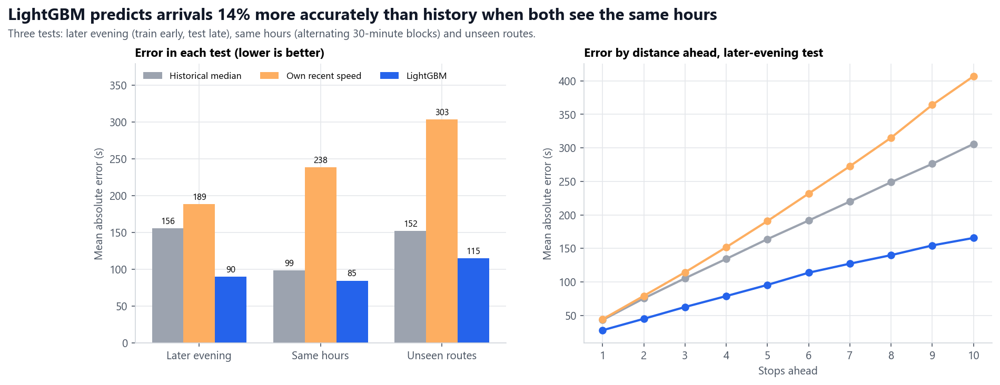
- The fair comparison is the same-hours test: LightGBM is 14% more accurate than history.
- On routes it has never seen, it is 24% more accurate, because it learns general patterns rather than memorising routes.
- The 42% in the later-evening test is flattering, because history from the 6 pm peak is a poor guide to lighter late-night traffic.
- Ten stops ahead, LightGBM is off by about 2.8 minutes, against about 5.1 minutes for history.
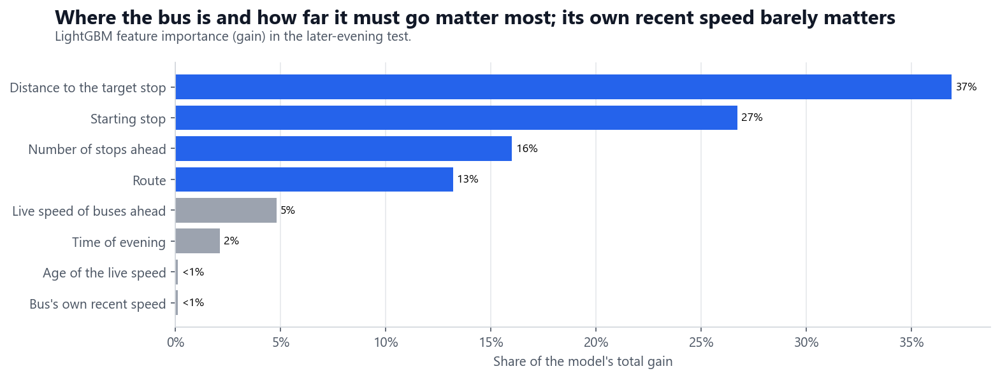
- Distance and the starting stop carry about two-thirds of the model's gain. The live speed of buses ahead adds 5%.
- A bus's own recent speed adds almost nothing. How fast it has been going says little about the road ahead.
06What changed since the 2023 timetable
The live feed's route numbers do not match the last public timetable, from early 2023. Routes were rebuilt from where buses actually went, then matched to 2023 routes by their stops. The snapshots are three and a half years apart, so differences show change, not service failures.
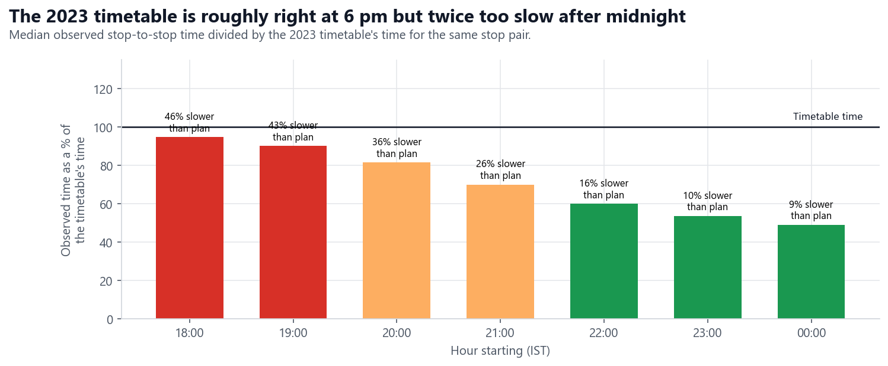
- At the 6 pm peak, the timetable is close on average, but 46% of trips take longer than it says.
- After midnight, buses take half the time the timetable shows. An app using it would be wrong in both directions.
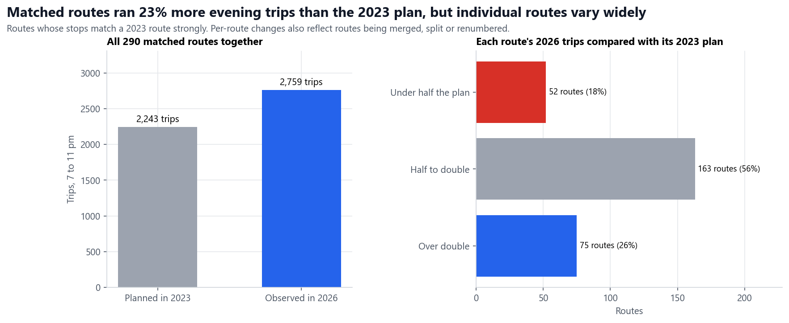
- 368 live routes match a 2023 route strongly. Their route numbers changed after 2023.
- Matched routes ran 2,759 evening trips against 2,243 planned in 2023, or 23% more. Individual routes vary widely, probably because some were merged, split or renumbered.

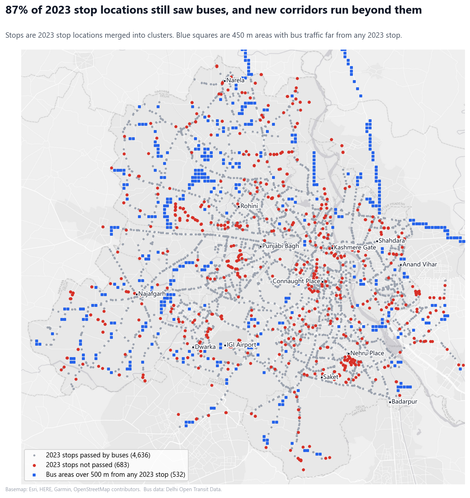
- 87% of 2023 stop locations still saw buses, so the network covers largely the same ground.
- Stops not passed (red) cluster in central and south Delhi. They may have moved, closed or had no evening service.
- Blue areas are bus roads far from any 2023 stop, including corridors towards Ghaziabad and Sonipat. These may be new routes.

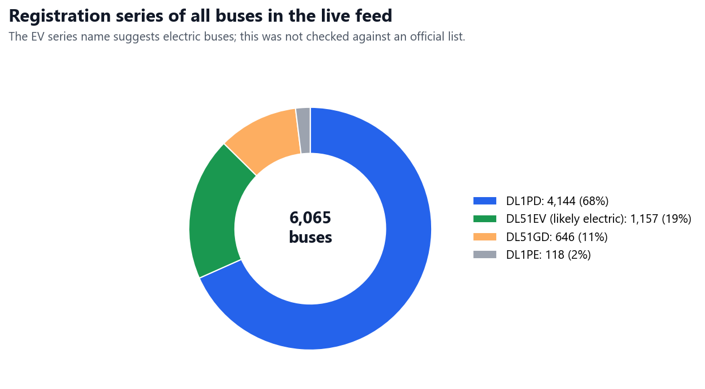
- About one bus in five carries a DL51EV plate, a series that suggests electric buses. This was not checked against an official fleet list.
07How it was done
The full pipeline is in the repository's scripts folder, and the notebook reproduces every chart in this report.
Limitations
- One weekday evening only. There is no morning peak, weekend or day-to-day comparison.
- Straight-line distances between stops slightly understate road speeds.
- Stop locations come from 2023, so stops added since then are missed.
- Route names are inferred for the 368 strongly matched routes only.